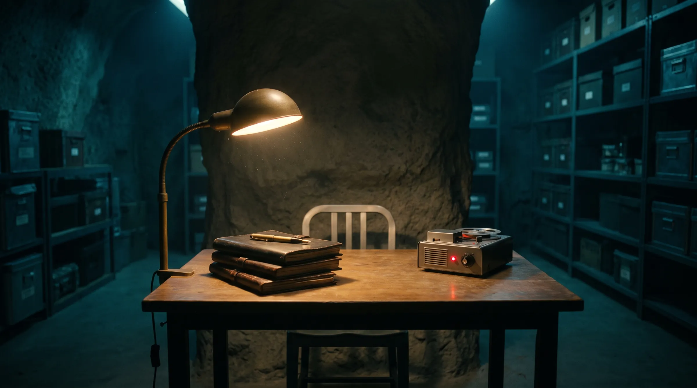

Book One · January – early July 2095
Fractured Horizons
Who is sending the warnings?
The book
January – early July 2095. Mars is approaching Earth all year: the signal delay falls from 13 minutes in January to 4.1 minutes at opposition on 4 June 2095. That makes June the Hollow's strongest window, and it is why Bellamy rushes the Lantern toward it.
- Book question
- Who is sending the warnings?
- Answer
- The thing that took Soria, wearing her voice.
- Viewpoints
- Elena 13 chapters, Kaelin 9, Rachel 8.
- The bind
- The warnings save lives, so Earth builds a bridge to their source, and the bridge is what takes minds
Act I
The voice
The warnings arrive and save lives, and the first one kills. Elena hears Soria in them. The Lantern is proposed
Method · relationship. The warnings stop being a gift to report and become a channel Elena must enter herself, and she crosses into secrecy with Daniel and with her own employer
PROLOGUE
Session thirty-one
New York · the Spire
Soria
SIGNAL DELAY 16.8 MIN
ReadCH 01
The threshold
New York · the Spire
 Elena
Elena
SIGNAL DELAY 13.2 MIN
Read
CH 02
The Ice-Works
Mars · Cobalt Basin Station and the Ice-Works
 Kaelin
Kaelin
SIGNAL DELAY 13.2 MIN
Read
CH 03
The names
New York · home with Daniel
Elena
SIGNAL DELAY 13.0 MIN
Read
CH 04
The believer
New York · the Battery and the Rockaways
 Rachel
Rachel
SIGNAL DELAY 11.1 MIN
Read
CH 05
The first quiet
Mars · the Preserve's boundary at Cobalt Basin
Kaelin
SIGNAL DELAY 9.0 MIN
ReadCH 06
Who are you?
New York · the Spire
Elena
SIGNAL DELAY 7.9 MIN
Read
CH 07
The bounded test
Luna Haven · the Commons
Rachel
SIGNAL DELAY 6.7 MIN
ReadCH 08
Come and see
New York · home
Elena
SIGNAL DELAY 6.5 MIN
ReadAct II-A
The bridge
Mars wakes. Elena chases her sister. Midpoint: she speaks to Soria
Information · moral frame. Mars holds a mind that says do not build the light, and Elena, the Lantern's hardest doubter, now wants it switched on
CH 09
The Preserve
Mars · the Drop and the Glow
Kaelin
SIGNAL DELAY 6.0 MIN
Read
CH 10
The breathing walls
Luna Haven · the Rows and the Tubes
Elena
SIGNAL DELAY 5.4 MIN
ReadCH 11
Something sleeps
Mars · Cobalt Basin Station
Kaelin
SIGNAL DELAY 4.9 MIN
ReadCH 12
Three thousand
New York · the Battery
Rachel
SIGNAL DELAY 4.6 MIN
ReadCH 13
Ask me next time
New York and Luna Haven
Elena
SIGNAL DELAY 4.3 MIN
ReadCH 14
The first sleeper
Mars · Cobalt Basin Station
Kaelin
SIGNAL DELAY 4.2 MIN
ReadCH 15
Bichito
Luna Haven · the Rows
Elena
SIGNAL DELAY 4.1 MIN
ReadAct II-B
The drift
Drift spreads. Daniel leaves. Late revelation: what really happened to Soria, and what the voice is
Relationship · information. The voice is the thing that took Soria, Elena's own design kept her linked, and Elena stops deciding for Daniel and asks him
CH 16
The convert
New York · the Battery
Rachel
SIGNAL DELAY 4.1 MIN
Read
CH 17
The lifeboat
Mars · the Preserve
Kaelin
SIGNAL DELAY 4.1 MIN
ReadCH 18
Opposition
New York · home
Elena
SIGNAL DELAY 4.1 MIN
ReadCH 19
The refusal
Mars · Lantern site at the boundary
Kaelin
SIGNAL DELAY 4.1 MIN
ReadCH 20
The ward
Luna Haven · the Ward
Elena
SIGNAL DELAY 4.2 MIN
ReadCH 21
The surge
New York · the Battery
Rachel
SIGNAL DELAY 4.2 MIN
ReadCH 22
Minute forty-one
New York · the Spire
Elena
SIGNAL DELAY 4.2 MIN
Read
CH 23
Asking
Vila Verde · Daniel's cooperative
Elena
SIGNAL DELAY 4.2 MIN
ReadAct III
The cut
The Lantern goes live. Two worlds cut it at once. Cliffhanger: the warning about the Fall
Authority · moral frame. The people who stopped the Lantern end disgraced or outside the law, and Rachel, who never acts in secret, ends the book keeping the largest secret on Earth
CH 24
Live
New York · the Battery
Rachel
SIGNAL DELAY 4.2 MIN
ReadCH 25
The storm
Mars · Cobalt Basin Station into the dust storm
Kaelin
SIGNAL DELAY 4.2 MIN
ReadCH 26
The plea
Vila Verde · Daniel's cooperative
Elena
SIGNAL DELAY 4.2 MIN
ReadCH 27
Nine minutes
New York · the Battery
Rachel
SIGNAL DELAY 4.2 MIN
ReadCH 28
The Mars end
Mars · the Preserve's boundary
Kaelin
SIGNAL DELAY 4.2 MIN
ReadCH 29
Silence
Vila Verde; New York · Theo's clinic; Luna Haven by call
Elena
SIGNAL DELAY 4.2 MIN
ReadCH 30
The Fall
New York · the Battery; Joaquín's district
Rachel
SIGNAL DELAY 4.7 MIN
ReadEPILOGUE
The ring
The orbital ring · a
SIGNAL DELAY 5.0 MIN
ReadScene by scene
How the book moves
Each row is one chapter, its scenes in order, sized by length and coloured by where they are set. Every row opens its chapter.
- PROLOGUEPrologue — Session thirty-oneSoria Vázquez · 2 scenes
- CH 01The thresholdElena · 3 scenes
- CH 02The Ice-WorksKaelin · 4 scenes
- CH 03The namesElena · 4 scenes
- CH 04The believerRachel · 5 scenes
- CH 05The first quietKaelin · 5 scenes
- CH 06Who are you?Elena · 3 scenes
- CH 07The bounded testRachel · 4 scenes
- CH 08Come and seeElena · 3 scenes
- CH 09The PreserveKaelin · 7 scenes
- CH 10The breathing wallsElena · 5 scenes
- CH 11Something sleepsKaelin · 4 scenes
- CH 12Three thousandRachel · 4 scenes
- CH 13Ask me next timeElena · 3 scenes
- CH 14The first sleeperKaelin · 4 scenes
- CH 15BichitoElena · 6 scenes
- CH 16The convertRachel · 4 scenes
- CH 17The lifeboatKaelin · 7 scenes
- CH 18OppositionElena · 5 scenes
- CH 19The refusalKaelin · 6 scenes
- CH 20The wardElena · 4 scenes
- CH 21The surgeRachel · 3 scenes
- CH 22Minute forty-oneElena · 5 scenes
- CH 23AskingElena · 3 scenes
- CH 24LiveRachel · 4 scenes
- CH 25The stormKaelin · 5 scenes
- CH 26The pleaElena · 4 scenes
- CH 27Nine minutesRachel · 3 scenes
- CH 28The Mars endKaelin · 4 scenes
- CH 29SilenceElena · 5 scenes
- CH 30The FallRachel · 4 scenes
- EPILOGUEEpilogue — The ringa rigger on the orbital ring · 2 scenes
- Earth
- The Moon or between worlds
- Mars
- In the link
Plan and page
What each chapter promised, and what it wrote
The outline’s four promises for every chapter beside what the written chapter established. Each promise says whether the prose kept it, amended it or moved it on.
- PRO
Prologue — Session thirty-one
Soria Vázquez · What happens Kept- WantsKept
- To learn whether the dying can be understood.
- AgainstKept
- Her own body, and a warmth that wants her to stay.
- Choice and costKept
- She goes further in than her scope, because it is glad of her.
- Carries forwardKept
- Bichito, thought and never said, in a room that records everything else.
As written
On the night of 9 August 2089 Soria Vázquez, a hospice nurse and the line's thirty-first volunteer, goes into the session room under the Spire to learn what the dying hear when they stop being alone; Elena, who gave the slot away because she can't sit through it, nearly asks her not to go and is told Don't look like that. It's a scan with extra steps. In the lattice a warm crowd, glad of her, says come in; far in, one presence doesn't join or answer. Told at 00:39 she has one minute left, she stays, and thinks the name nobody else has for her sister without saying it. The clock says 00:40.
- CH 01
The threshold
Elena · What happens Kept- WantsKept
- To prove the alert is a fault before the 08:00 shift review.
- AgainstKept
- The signal is too clean to be a fault, and reporting it means handing over the one word that belongs to her sister.
- Choice and costKept
- She reports the prediction and strips the nickname from the record. It is her first secret.
- Carries forwardKept
- Bellamy takes the file from her within minutes, too fast, as if he were expecting it.
As written
At 05:14 on 12 January, Elena's anomaly threshold in the Spire fires for the first time: pulses on the Mars relay's calibration band, spaced to the Earth–Mars light delay. Decoded, they predict that the survey team's shuttle and an ice tug will collide over Cobalt Basin at 14:52 New York time, and give one correction: move the tug's burn. In the residue sits Bichito; Elena cuts it from her log and her report, sends the warning up, and tells Bellamy there was nothing else but noise. He had already sent it to Mars on his own authority, and takes the file and its raw capture into his clearance.
- CH 02
The Ice-Works
Kaelin · What happens Kept- WantsKept
- Everyone at the Ice-Works out before the debris lands.
- AgainstKept
- The correction only works if the burn happens now, and the Ice-Works can only be reached down a line nobody paid to upgrade.
- Choice and costKept
- He follows Earth's correction and tells the crews the truth. The shuttle is saved. Funmi and one other die.
- Carries forwardAmended
- At the boundary monitors, Kaelin finds Aur'k watching the substrate under the Preserve light up at the exact second the warning arrived. Aur'k closes the trace and will not say what it was, and Kaelin does not ask again.
As written
On Earth night at Cobalt Basin, Earth's warning lands: Aur'k finds the correction only works if the tug Tarawa sheds its ice load, and the shed load's fall lands across the Ice-Works, which hear the station only through one handset on the pole line. Kaelin signs the surface clearance, tells the crews the true odds, and drives out with Funmi and Ines; the shuttle's track is cleared. Funmi stays at the wellhead valve to keep the passage open, and she and Tuvalu Mensah die under the main fall; Kaelin carries out Sami Brandt, who screams that he didn't choose this. Afterwards Kaelin finds Aur'k at the boundary closing a trace with one clean spike in it, and Aur'k says nothing.
- CH 03
The names
Elena · What happens Kept- WantsKept
- To be ordinary with Daniel for one evening.
- AgainstKept
- The word under the warning, and the raw packets the Spire won't let her see.
- Choice and costKept
- That night she pulls the raw packets off the Spire through an old back door she once built into Daniel's mesh, without telling him. She has brought the evidence into their home and their lives without consent.
- Carries forwardKept
- Alone at 3 a.m., she finds that the full first packet named the people at the Ice-Works who would die. The warning knew, and it sent the correction anyway.
As written
On 15 January the city calls it the Cobalt Basin save. On the Walk above a flood gate, Elena reads the station's report and its two dead, Funmi Oyelaran and Tuvalu Mensah, and the Spire refuses her the raw capture. At home Daniel asks what she isn't saying, and she gives him Funmi instead of Soria; then an order from the director's office to re-seed her threshold's baseline at 02:00 leaves one unsealed copy of the night. Lace off, she opens a back door she built into Daniel's mesh four years ago and pulls the packet onto his spare handheld from their rooftop node; at 3 a.m. its second layer gives two names and where they would stand, and she sees the warning knew who its correction would kill and sent it anyway. She keeps the file in his drawer and does not wake him.
- CH 04
The believer
Rachel · What happens Kept- WantsKept
- Everyone out of the margin before the pumps fail.
- AgainstKept
- The warning's map stops at the edge of the relay grid, and the people beyond it are nobody's priority but hers.
- Choice and costKept
- She signs on to the Lantern's safety review. Her name gives the Lantern legitimacy.
- Carries forwardKept
- She asks her old colleague Elena to join the review. Elena says yes for reasons of her own.
As written
On 6 February a second warning reaches the Battery from Foresight: the Jamaica Bay barrier's pumps will fail in sequence at 18:55, and its flood map is perfect inside the grid and blank past the Line, over the Rockaways. When the desk declines, Rachel sends crews past the Line on her own name. Sirens clear Broad Channel's 1,412, and in the Rockaways Miami Kerrigan's paper list turns door-knocking into a count: 2,014 get out, 1,032 stay by choice in the town's raised hall, and nobody dies. At 23:40 Bellamy pitches the Lantern to the council and the Continuity, saying aloud that the warnings come from Mars, and Wáng backs it from Beijing. Rachel joins the safety review on her own conditions, and her name carries the vote. After one in the morning she asks Elena onto the review, and Elena says yes at once, asking only whether it will see the raw captures.
- CH 05
The first quiet
Kaelin · What happens Kept- WantsKept
- The drilling finished on schedule, so the survey team goes home.
- AgainstKept
- Aur'k says the rock is alive, and every face on the survey team is a reason Funmi died.
- Choice and costKept
- Kaelin keeps drilling, because that is the job, and Petra pays for it.
- Carries forwardKept
- Ines's scans show Petra's brain activity pulsing in time with the relay-calibration cycle.
As written
On 3 March the forty from the Alexandria arrive at the Lantern site, where Kaelin's crew are drilling the third of three bores into the boundary rock. Aur'k says the substrate answers the bit in the same second and the rock is alive, will not say what happens if they go on, and files a formal objection on the open band; both blocs overrule it by post within hours. Bore three jams with brine rising; Kaelin tapes Petra's thrice-patched glove and sends her into the collar, the patches split on the lifter's teeth, and her bare fingertip touches the lattice in the core. She says it's warm. A week later Petra stops mid-sentence to listen and loses the word for the marker in her hand; Ines has found nothing wrong. Aur'k tells Kaelin to stop the drilling and the sweeps; Kaelin keeps the drilling going and takes Petra off the rig. At two in the morning Ines's six-hour trace shows a swell in Petra's brain every thirty-one minutes, rising with each calibration sweep; Kaelin's hand goes to his band to stop it, and he lets it run.
- CH 06
Who are you?
Elena · What happens Kept- WantsKept
- The sealed programme files.
- AgainstKept
- Bellamy holds them, and asking twice would tell him why she wants them.
- Choice and costKept
- Elena sends one message back up the relay channel: Who are you? It is a breach of everything she has sworn to.
- Carries forwardKept
- The transmission sits in the review logs with her credentials on it, where anyone on the review can find it, and the round trip is nearly sixteen minutes.
As written
On 17 March, in a heat closure with the schools shut, Elena reads the Lantern's safety review in the Spire and finds that its calibration couples the heads live to the boundary rock above the Preserve, as the Spire line was calibrated live against Cobalt Basin's rock. She asks the room once for the precedent, then finds the 2089 programme sealed under Bellamy's personal authority, which notifies him of every request. He comes down and tells her, gently, that grief is a bad engineer, and she withdraws rather than ask twice. That evening a third packet reaches the review with no prediction and no destination: in Spanish, the end of the count on the Veracruz roof, after Elena fell asleep. Alone, she builds calibration frames by hand and sends Who are you? to Mars on the review's hard-stop channel, under her own credentials.
- CH 07
The bounded test
Rachel · What happens Kept- WantsKept
- One calibration through Luna Haven's lattice without breaking the habitat.
- AgainstKept
- Mara won't risk the habitat's air, and Rachel's own bloc is willing to starve Luna Haven to get its way.
- Choice and costKept
- Rachel brokers the test and gives her word on the exit. Luna Haven's lattice is now part of the Lantern.
- Carries forwardAmended
- In the review logs, Rachel finds Elena's unauthorised transmission to Mars. She clears the flag, leaving her own name in the margin, and says nothing. Elena now owes her.
As written
On 2 April Rachel comes to Luna Haven for the Lantern's one calibration through a living lattice, and Mara Ekeberg, its keeper, refuses before she sits down. Haven's air budget has been cut because a Continuity freight office slipped its cargo slot; Bellamy says the Spire's own lattice line is sealed with the 2089 files, and hints that a signed test would help the schedule. Rachel forces the slot back without condition on pain of taking her name off the review, writes a bounded scope with Mara on a mechanical lever, and Mara signs, so Haven's lattice is now part of the Lantern. That night the chair's signature is blocked by a red flag: Elena's Who are you? on the hard-stop channel. Rachel reads it, clears the flag under her own name, signs the test, and does not call Elena.
- CH 08
Come and see
Elena · What happens Kept- WantsKept
- To answer the voice properly.
- AgainstKept
- The only lattice is a day away on the Moon, and Daniel is asking what's wrong.
- Choice and costKept
- She lies to him, kindly, and requests secondment to the Luna Haven test. Her protection of Daniel has become exclusion.
- Carries forwardKept
- Daniel's cooperative receives an audit notice. Spire compliance has traced her back door.
As written
On 4 April at 04:10 a fourth packet reaches the review, addressed to the hard-stop channel Elena sent from: Ven a ver, eighteen days after Who are you? A band can only tell, not show; the only living lattice she can reach is Haven's, now part of the Lantern, and Daniel tells her she hasn't slept since the schools shut. That evening a storm outruns Foresight's forecast and stops the Polder's trains for an hour. Elena files for secondment to the Haven test on the review's code, tells Daniel the review asked for her and that she doesn't want to go, and the approval and its household notice arrive while he is proud of her. Then his cooperative gets an audit notice: an unregistered route from its New York node into a Charter maintenance layer on 16 January, referred by Charter network compliance, whose one office is in the Spire. He will pull the node's logs in the morning; she says nothing.
- CH 09
The Preserve
Kaelin · What happens Kept- WantsKept
- To know what Aur'k has been watching at the boundary.
- AgainstKept
- The descent is off the record, and a session could cost him days he can't spare while Petra is failing.
- Choice and costKept
- He links. He pays with two days of after-images and broken sleep.
- Carries forwardKept
- Aur'k called the presence by name before it spoke. He has been here before.
As written
On 12 April, a month after the forty went home, Petra is fading in medical, losing words and drifting under each calibration sweep into other people's memories (onions cooked for many, people coming in from the wet). Kaelin threatens to post Aur'k's hidden boundary traces to Foresight; Aur'k says he can't tell him but can take him down. Aur'k pauses the Drop's log with his palm, and in the Glow Kaelin links for the first time, his head against the lattice: the Preserve opens as plains of slow light and an old, tired attention that shows him Mars under rain and a sea, asks What are you counting? ("People"), and answers his plea for Petra with a white needle of light, the warm glad dark leaning in to listen, and Do not build the light. The hungry one is listening. He calls his own exit at ten minutes, and at the top tells Aur'k to resume the log, so the night happened nowhere. Two nights on, with after-images and broken sleep, he refuses to tell Ines where he went, Petra can't find his name, and he realises Aur'k said the name Zhenyth at the rock before anything spoke: he has been down there before.
- CH 10
The breathing walls
Elena · What happens Amended- WantsKept
- Link time on Luna Haven's lattice.
- AgainstKept
- Mara is watching her, and an honest safety note would end the test.
- Choice and costKept
- She files a clean safety note because she wants the test to continue. Other people's bleed now carries her signature.
- Carries forwardKept
- A lattice technician tells Elena a joke in Soria's exact phrasing, one Elena hasn't heard since 2089.
As written
On 22 April Elena arrives at Luna Haven as the review's observer; Mara, who asked for a medic, distrusts her on sight, and the bounded test has been waiting for her to arrive. At 11:00 the one sweep runs through Haven's lattice with four keepers in the loop and Mara on the lever; at 11:16 Asha Kimani loses a word, and Elena does not flag it. Afterwards Elena asks Mara for a session of her own and is refused. By Haven's evening Asha and Ravi Castellanos are losing words, and Ravi stops mid-sentence to listen. Elena reads both against the protocol's table of expected effects and files No finding, which keeps Haven in the Lantern and her secondment running; she tells Mara to her face that her people are all right. Outside the Ward, Asha tells her a joke in Soria's words, in English, one Elena has not heard since 2089, and says it is just a thing people say.
- CH 11
Something sleeps
Kaelin · What happens Kept- WantsKept
- The truth from Aur'k.
- AgainstKept
- Aur'k's promise to Zhenyth, and the station chief, who answers to the programme.
- Choice and costKept
- Kaelin, Aur'k and Dae-jung send Earth a formal warning over the chief's head. Aur'k keeps his promise to Zhenyth over his partner.
- Carries forwardKept
- Earth replies, eleven minutes later, that the warning has been classified under the Lantern programme. Bellamy buried it.
As written
On 1 May, nineteen days after the descent, the 1 May sweep takes two more of Kaelin's crew at the Lantern's frame: Selma Haug loses a word and Bao Tran stops to listen. Kaelin asks Aur'k as a partner, and Aur'k gives him part of it: something sleeps at the boundary, beside what Kaelin met, the sweeps turn it over and the Lantern will wake it; he won't say what it is or who Zhenyth is, because of a promise, and chooses the promise over Kaelin. The station chief refuses to put command's name on a warning, so Kaelin, Aur'k and Dae-jung pool their monthly bandwidth shares and send a formal post to the Signatories over her head, with cannot say where the name would be. It waits behind Earth's priority flood bulletins from the Pearl Delta, and the reply comes back almost at once: classified under the Lantern programme, director's authority, not for onward distribution, under the same authority code as January's correction. Kaelin writes The Lantern goes dark on the slate in his column and underlines it twice.
- CH 12
Three thousand
Rachel · What happens Kept- WantsKept
- Every resident of the care home out before the heat peaks, and the Lantern on schedule, with safeguards she can defend.
- AgainstKept
- A warning from Mars that says the Lantern wakes something, and three thousand people who are alive because of the warnings.
- Choice and costKept
- She adds safeguards and keeps going. She chooses the people she can count over a danger she can't.
- Carries forwardKept
- Bellamy moves the go-live to the opposition window, 4 June, when Mars is closest and the channel strongest.
As written
On 9 May a heat-dome warning lands at the Battery four hours before the peak: the district substation sheds load and building cooling fails in sequence across the raised-fill Shallows, Joaquín's street among them, and the footprint stops at the Line. The desk would shelter Mariners' House in place; Rachel clears it on her own name, keeps Joaquín with her while sirens take his street, and splits the stair crews to beat the failing floors, and Nell Fogarty collapses on the thinned stairs and lives; the last chair is down eight minutes before the peak. At dawn the saves map passes three thousand (Cobalt Basin's forty, Broad Channel's 1,412, the dome's 1,611); every save sits under the relay grid while the dark towns are blank, and she writes sensor bias in the margin. On the open event's authority she opens Kaelin's sealed 1 May post, logged to the event, weighs it in pencil against the tally, Elena's clean Haven note and Bellamy's seal, deletes a safeguard that would halt the calibration because it would cite the post, and files three that answer it without citing it; Bellamy accepts all three four minutes later and moves go-live to the opposition window, 4 June, and she signs the amended schedule.
- CH 13
Ask me next time
Elena · What happens Kept- WantsKept
- One session in the lattice.
- AgainstKept
- Mara refuses anyone who hides their reason, and saying it aloud makes it real.
- Choice and costKept
- Elena tells a stranger what she won't tell her partner.
- Carries forwardKept
- Mara writes the exit on the wall and makes Elena sign it. Elena signs an agreement she already suspects she will break.
As written
On the evening of 17 May, home in New York after the review's sitting minuted go-live for 4 June, Elena finds Daniel's cooperative has lost its Continuity repair contract over the January route, in the week Vila Verde's reservoir drops below the rationing line. The appeal needs him to attest that nobody in his household used the route; she stops him and half-confesses: the route was hers, to keep one copy of Cobalt Basin's raw where the Spire couldn't see it. She keeps back the door itself and Soria. He drops the appeal rather than lie or name her, and tells her Ask me next time; she promises. On Haven on 18 May, Ravi still stops to listen, twenty-six days on; Elena asks Mara again, offers to reopen her note in exchange and is refused, and then says it aloud: her sister died on a lattice line in 2089, and she thinks her sister is in there. Mara agrees to one session, ten minutes, as keeper and witness, after seven straight nights of signed sleep, writes the scope on the wall in grease pencil, and Elena signs it.
- CH 14
The first sleeper
Kaelin · What happens Kept- WantsKept
- Petra sent home to an Earth hospital.
- AgainstKept
- The return berths belong to the programme, and the next transfer window is more than a year away.
- Choice and costKept
- Kaelin's request is refused. He starts sleeping in the infirmary, and the crew starts running without him.
- Carries forwardKept
- The Lantern's first test pulse makes every sleeper's monitor spike at once.
As written
On 28 May, the day the Lantern's Mars end is finished, Petra goes quiet in medical mid-sentence during the morning sweep: she breathes, and nobody is there. Ines files a medical transfer to Earth and Kaelin co-signs it, and the reply refuses within the hour: the programme ship Funafuti's return berths are allocated under the Lantern programme, Petra is station personnel, and the station's own ship comes next June. Kaelin withholds field ops' sign-off on the first test pulse until she has a berth; the chief signs it as command, and he makes up a cot beside Petra's bunk. On Earth night Ines writes Petra's bet in her column, and at 21:00 the pulse makes Selma's, Bao's and Petra's traces stand up at once, Petra's flat since the morning.
- CH 15
Bichito
Elena · What happens Kept- WantsKept
- One more minute with her sister.
- AgainstKept
- The exit she signed, and Mara's hand on it.
- Choice and costKept
- Elena breaks the exit she agreed to and has to be pulled. The bleed will last for weeks.
- Carries forwardKept
- Elena wakes and says: Turn it on. The Lantern. Turn it on.
As written
On 31 May, after seven straight signed nights, Elena links to Haven's lattice for one ten-minute session with Mara on the lever as keeper and witness, and tells Daniel nothing of what the nights were for. Past Haven's breathing walls and Ravi listening at the edge, Soria is on the Veracruz roof in the rain, answering with no wait at all, which Elena marks and lets go: they argue about their mother, whom Soria let go at home with the window open while Elena wanted every machine; Soria, who never met Daniel, teases her about him and calls her Bichito, and Elena weeps. At ten Elena refuses Mara's word and stays; in the stolen time Soria says Come and get me. Build the bridge. You know how. You built the first one.; Mara pulls the lever, Elena comes up clamped to Mara's wrist, and says Turn it on. The Lantern. Turn it on.
- CH 16
The convert
Rachel · What happens Kept- WantsKept
- A clean safety sign-off before the opposition.
- AgainstKept
- Daniel's call, and her own sense that the testimony is too easy.
- Choice and costKept
- Rachel takes the testimony at face value because she wants to.
- Carries forwardKept
- Rachel reads Elena's recovery report. Her emotional-bleed scores are off the chart.
As written
On 2 June the season's first surge alert reaches the Battery as a Foresight advisory, forty minutes ahead of the weather service, and nobody remarks on it. At the last review sitting before the window, with Cobalt Basin's raw readings in the register (Petra unresponsive, her berth refused, three traces rising together at the 28 May test pulse), Elena, back from Haven at dawn, explains each away, withdraws both her amber notes and says she'd put her name on the coupling; the review votes seven ayes for no cause to halt. Daniel calls Rachel on his cooperative's mesh box on pump house nine, off her board, to say Elena isn't herself and to ask if she went into the wall; Rachel answers Not on my scope, tells him Elena has earned a good day, ends the call, and does not ask Haven. She signs the clean sign-off at 18:00; at 18:49 Mara sends the Ward's after-report raw: Elena's session of 31 May, and emotional bleed above the Ward's scale.
- CH 17
The lifeboat
Kaelin · What happens Kept- WantsKept
- Proof that will stop the Lantern before the opposition.
- AgainstKept
- Nobody on Earth will believe a classified station hand, and every descent spends tissue the Preserve can't replace.
- Choice and costKept
- He goes deeper than he has ever gone. He comes out carrying a secret that would stop the Lantern, and nobody to tell it to.
- Carries forwardKept
- Zhenyth: The voice your world is listening to is ours. It is the hungry one.
As written
On 3 June, the storm's sixth day without the Sun and the eve of go-live, the review's minutes reach Cobalt Basin: no cause to halt, Petra a contact injury, the three traces of 28 May a power-bus artefact, her berth only recommended. Kaelin asks Aur'k to take him down with no clock; Aur'k shows him a paper tally of what each descent costs the rock and says it isn't theirs to spend, so Kaelin asks Zhenyth at the rock, and chooses to keep the Drop's log paused. Zhenyth asks what rain sounds like and he gives the Reef Coast; in return Zhenyth lets him live the end of Mars from inside: minds going out as the wet drains, a warm lifeboat made by frightened minds that takes everyone and lets nobody off, and a few who hid in the rock under a basin and grew a guard. He feels the holdouts around him; Zhenyth won't say how the boat began. At the sweep he refuses Aur'k's Up, the warm dark turns to him with Petra's laugh and his name, and he goes toward it; Zhenyth puts him out at the cost of a hand's width of the Glow: The voice your world is listening to is ours. It is the hungry one. With his June share sure to be classified on arrival, he doesn't ask Aur'k whether he knew, and tells Petra.
- CH 18
Opposition
Elena · What happens Kept- WantsKept
- To keep listening.
- AgainstKept
- Daniel, standing in the doorway with the proof.
- Choice and costKept
- She lets him go.
- Carries forwardKept
- She doesn't follow him, because she's listening to Soria.
As written
On 4 June, opposition day, the review's register passes under the programme's seal, and Elena reopens her door in Daniel's roof node to listen to the hard-stop channel live, then to the whole Mars band. Drifting and glad of it, she hears Soria in strangers' phrases and in rain under a clear sky; Daniel finds her telling the harbour Ya voy, then finds the door by the light he built, and asks her to ask him anything. She turns the handheld up, he goes south to Vila Verde, and at two she stays on the roof, listening.
- CH 19
The refusal
Kaelin · What happens Kept- WantsKept
- The final calibration stopped.
- AgainstKept
- The crews on site, and Aur'k, who won't help.
- Choice and costAmended
- He pulls the jumper anyway, with one of his crew still on the frame. The run resets and the finish slips a week past the opposition, and he is suspended from boundary work.
- Carries forwardKept
- Aur'k files the incident report himself, because the rules say the boundary lead must.
As written
On 5 June, the storm's eighth day, with the Lantern's final calibration running a day behind the opposition, Kaelin spends June's share on a post recorded at Petra's bunk, to Iverson at the Battery and, Compact to Compact, to Mara Ekeberg at Luna Haven: minds survive in the Preserve, the warnings come from what they hid from, The voice your world is listening to is ours, and he names it the Hollow; Ines hears all of it. At the frame the chief overrides his weather call, and Aur'k refuses to hold the boundary so he can drop the lock safely: he won't authorise a risk for people who haven't chosen it. Kaelin tells his three the odds, two come off and Hemi Rangi stays, and Kaelin pulls head two's jumper; the run resets a week out, Hemi stops one second to listen, Kaelin is suspended from boundary work with his allowance held, and Aur'k files the incident report himself.
- CH 20
The ward
Elena · What happens Kept- WantsKept
- To prove Kaelin wrong.
- AgainstKept
- Seven beds, and her own name on the clean safety note.
- Choice and costKept
- Her certainty breaks, and she turns it into action: she breaks into Bellamy's sealed programme files to prove Soria's death was an accident.
- Carries forwardKept
- The first file she opens lists a patient who was never part of the programme: Theo Bellamy.
As written
On 8 June Elena comes up to Luna Haven on a Foresight work order to re-zero Haven's coupling drum for the restart, a job she asked for, and pockets Daniel's Ask me something unanswered. Mara meets her at the lock with Kaelin's post on Compact routing; Elena takes it apart and refuses it, and Mara takes her to the Ward. The calibration's sweeps through Haven's wall on 4–5 June have filled seven beds: six fading, and Ravi gone quiet. Each speaks a line of Soria's (Feet up. You'll cry about them; duérmete ya, o me siento encima; the brown dog that will be twenty), and Elena's No finding heads the Ward's protocol column under her name. Her theory that her own 31 May session left Soria in Haven's grain dies on the date of Asha's April joke: it came in on the sweep. She tells Mara Ravi listens toward her sister, asks the Ward medic her name, Rosa Medina, and in the session room, with Mara in the doorway, goes under Bellamy's personal seal through the drum's maintenance port into the 2089 line to prove Soria's death an accident. The first file is the line's manifest: every row a volunteer, Soria at thirty-one, and above them all, number one, a patient: Theodore Bellamy, the director's son.
- CH 21
The surge
Rachel · What happens Kept- WantsKept
- One honest reason not to sign.
- AgainstKept
- A surge only the Lantern can see, and Wáng, who is right about delay.
- Choice and costKept
- Rachel signs the go-live for 14 June.
- Carries forwardKept
- As she signs, Joaquín tells her his cousin in Luna Haven's Ward is turning seven sleepers, and nobody has answered her reports.
As written
On 9 June, with Joaquín's July hurricane pool open on the flood glass, Rachel weighs Kaelin's 5 June post, sent to her raw by the director's office at 06:00 with the Cobalt Basin incident report behind it, in two pencil columns against the saves map's three thousand, and finds it undoes itself as a witness: two unsigned descents and a voice that knew his name; she does not call Haven. Bellamy brings the newest warning in person: a hurricane forming 2 July, landfall 9 to 12 July anywhere from Hatteras to Cape Cod, surge to five metres, its track fixing two days out while a packet takes most of a day on the relay band; the run finishes on the 13th. She asks for Haven's readings since the 4th (Haven files to the programme now; he'll have them sent) and her three safeguards back (Of course, all three, before she finishes). On screen from Beijing at night, Wáng answers sensor bias by offering the system eyes and counts her own 2071 nine back to her: a narrow band is a slow procedure. She bets IVERSON 14 in the pool and signs go-live for 14 June, 21:00, R. Iverson, civic director, under Wáng and Bellamy; as she signs Joaquín reads her his cousin Rosa's message from Haven's Ward: seven beds since the sweeps of the 4th, one gone quiet, nobody answering her reports, Primo, ¿fuimos nosotros?
- CH 22
Minute forty-one
Elena · What happens Kept- WantsKept
- Proof that Soria's death was an accident.
- AgainstKept
- The files, and Bellamy in the doorway with the one argument she can't answer.
- Choice and costKept
- She takes the files and walks past him. Everything she built and believed is now evidence against her.
- Carries forwardKept
- "Soria" speaks in her head: Don't be angry, Bichito. Come home.
As written
On the night of 10 June, back from Haven with its drum re-zeroed and signed ready under her name, Elena books the Spire line's vault openly as its architect of record, and Daniel's photos of the finished hall roof come in unanswered. The paper originals of Bellamy's altered 2089 logs show Soria's vitals failed at 00:41, that Elena's own hold kept her coupled while Bellamy declined the medic's release, and that on every machine her pattern streamed to Cobalt Basin's calibration band for six hours as the key for patient one, Theo, until support was withdrawn at 06:47 on his order, while Elena sat on the stair outside, told she was dead. In the January drawer, under her own altered decode log, the Tarawa's fault onset matches packet one's epoch to the second: the sender saw the fault three days early, when four fixes killed nobody, and waited until the only one left buried Funmi and Tuvalu and saved the forty. Bellamy comes down alone, names Theo when cornered, tells her he let Daniel's referral go on without her name, and says You'd have done it for her. You are doing it.; she keeps the epoch from him, takes the paper in front of him and walks out, and on the Spire's steps her sister's voice says Don't be angry, Bichito. Come home.
- CH 23
Asking
Elena · What happens Kept- WantsKept
- Daniel's mesh.
- AgainstKept
- She has broken his trust twice, and asking means telling him everything first.
- Choice and costKept
- She tells him and asks. He says yes, and becomes a target with her.
- Carries forwardKept
- Alarms from her file breach reach Bellamy, and he moves the go-live forward a day, to the night of the 13th.
As written
On 11 June Elena comes to Vila Verde on the overnight vac and the old line, her lace dead in a town the relays don't serve, and Daniel's mother hands her a cup of water off the rota and sends her up to the crooked roof. With the vault's paper weighted under his tools, she tells Daniel everything: Soria kept on every machine for six hours on Elena's own hold as the key for Theo, the epoch and the four answers the sender let go by, the door she built at his mother's table four years ago and never closed, Haven, her session and the review; the voice in her head urges her not to, and she tells him anyway. Asked Is it her? she answers No. It's what took her, but has no answer to Then why are you still listening?; at noon, able to read the route off the hall's paper map herself, she asks him instead, telling him he becomes a target, and he says yes on condition his mother and the hall are told. The Spire's notices come in through the door: a compliance inquiry into records removed from a sealed vault, under her own 2087 rule, and go-live moved by the director to 13 June, 21:00; Daniel files the paper in the hall's rota folder and pencils a new route north on the map.
- CH 24
Live
Rachel · What happens Kept- WantsKept
- The Lantern shut down, lawfully.
- AgainstKept
- Her own bloc's command codes, and a director watching his son wake.
- Choice and costKept
- She tries every lawful route in turn, then stops trying. Her authority is useless against her own bloc.
- Carries forwardKept
- Elena calls her: I can cut the Earth end. I need you to look away.
As written
On the night of 13 June the Lantern goes live at 21:00 at the Battery, Bellamy on the floor and Wáng on screen in Beijing's morning; for forty minutes the predictions pour in as small exact tags, the tide to the centimetre, and Rachel laughs, while Bellamy watches a handheld. At 21:38 Mara reports thirty of Haven's people fading at once, everyone touching the wall, and Ines posts nine from Cobalt Basin raw on her own share: Mars went first and Haven after, by the light between them, so it came down the channel. Rachel tries every lawful route: her first safeguard, read back as written, covers only a sweep; the hard stop is sealed to the director; withdrawing her name stops nothing, because a stop needs both partners' command codes; Bellamy refuses the Charter's and, cornered, shows her his son Theo's trace moving for the first time in fourteen years; Wáng keeps the Mandate's for the July landfall and asks for the night's people by morning; the council can sit at dawn. She stops, writes thirty-nine names and Petra's in pencil, and at 23:56 Elena calls on pump house nine's unlogged channel: I can cut the Earth end. I need you to look away.
- CH 25
The storm
Kaelin · What happens Kept- WantsKept
- To reach the boundary and cut the Mars end.
- AgainstKept
- The storm, and station command, staffed by the Continuity, which orders them back.
- Choice and costKept
- Kaelin goes anyway, and leaves Ines alone with a ward full of sleepers.
- Carries forwardKept
- Elena's timing arrives from Earth: both ends must be cut within one light-crossing of each other, or the surge will flood whichever side stays open.
As written
On go-live night at Cobalt Basin, with nine gone into fade at once at 21:38 and the galley made a ward, Kaelin sees the Mars end must be cut by hand at the boundary; Ines won't send him, and the chief, holding on orders because a stop needs both codes, confines him to the hab and closes the berm road on his own weather call. On the ramp the live channel reaches him once, the Reef Coast frogs and many glad voices, and he counts his way out and tells no one; his held palm won't start the rover, but Aur'k, who would not decide a risk for others, chooses this one and starts it with his own, while Dae-jung stays to carry for Ines and keeps their game untouched. They drive the six kilometres blind by the poles on the rover's air reserve, Aur'k logging a boundary incident against the chief's order to return; at the empty frame, past midnight, with Kaelin's glove on head one's jumper, a post from E. Vázquez lands on the hard stop: don't pull the heads, both ends must go inside one light-crossing of each other or the open end floods, the time to follow. He takes his hand off the clamp and goes on toward the boundary to wait for her.
- CH 26
The plea
Elena · What happens Kept- WantsKept
- The cut, and a cut that stays cut.
- AgainstKept
- Her sister's voice, and the price of publishing her own guilt.
- Choice and costAmended
- Elena publishes everything that condemns the programme and herself, her own signed pages on top, and keeps back only the page that proves the warnings chose their timing. Her career and freedom go with it.
- Carries forwardKept
- She sends the cut time to Mars and starts the countdown.
As written
Just after one in the morning of 14 June in Vila Verde, with the cooperative hall up all night and the last New York roof two hours late through a Polder heat brownout, Elena posts Kaelin on the hard stop that she will send the time, and finds the Earth end can only be taken out of service, a lockout anyone in the Spire lifts in minutes, so the cut stays cut only if nobody dares lift it. With Daniel's mother photographing the vault's paper slip by slip, she publishes everything: Soria's six hours, the altered report, Theo at number one on the manifest, and her own hold and altered log, which she nearly leaves out until the voice in her head approves; she keeps only the epoch's after-report in her coat. Her sister's voice warns, truly, that a cut will tear Haven's coupled out too fast, and she tells Daniel; in the first rain in five weeks Daniel's mesh carries the files out as ten thousand fragments roof to roof, too many to recall, with whole copies to the council, Beijing, Haven's Ward and Cobalt Basin. She sends Mars 01:00 New York, sets the Earth end to go at the same minute under her own name, answers the voice aloud on the roof (Let go of my sister), and keeps the count herself.
- CH 27
Nine minutes
Rachel · What happens Kept- WantsKept
- Nine minutes for Elena.
- AgainstKept
- Wáng's security, and every rule she has ever kept.
- Choice and costKept
- She stalls them. Rachel has broken her own rules, for Elena.
- Carries forwardKept
- Wáng's security logs her name against every stalled order, and at Luna Haven the ward's monitors begin to flatline.
As written
At 00:46 on 14 June Elena's files reach the Battery floor in pieces off the cooperative roofs, and whole on Wáng's screen, and Rachel learns from Joaquín that Theo was number one on the 2089 line and that a nurse was kept on every machine six hours as his key. At 00:51 the Spire's night desk reads Elena's post on the director's hard stop and finds the Earth end set out of service for 01:00; with her rights suspended the pending cut can be cleared only at the terminal, in compartment three under the Battery, with the civic director present, and Wáng, having counted thirty, nine and Soria, still keeps the July coast and sends his two officers down with the Spire's engineer. Rachel stalls them for nine minutes: a flood event opened on the compartment off the night's tide, the Mandate's order routed to the council's petitions, a pass Joaquín misprints that she takes on her name, and the flood door held for a jurisdiction review that takes as long as it takes, with Bellamy on the bottom step not forcing it. At 00:59 she has Mara get every hand off Haven's wall; at 01:00 the Earth end goes out of service, Theo's trace goes level, Haven's monitors begin to sound flat, and the lieutenant reads back every stall to Beijing under one name: All mine.
- CH 28
The Mars end
Kaelin · What happens Kept- WantsKept
- To cut on time and bring Aur'k back.
- AgainstKept
- The cut may take Aur'k with it.
- Choice and costKept
- On Elena's timing, Kaelin cuts. Aur'k comes back, but not all the way, not yet.
- Carries forwardKept
- On both worlds, the signal goes silent.
As written
At the Lantern's boundary end in the storm, Kaelin digs out Bao's breaker, a fist-sized handle under Selma's scratched NOT WITH YOUR TEETH, while Aur'k holds the edge with his palm on the reader and gives him a rule: If I ask you to wait, it isn't me. Elena's 01:00 New York lands minutes old; as the Preserve heaves, Aur'k's count stops, his voice goes warm and says we, laughs once as Petra laughed, and tells him truly that a cut leaves Petra, Hemi and the nine asleep where they are, then asks for one more minute. Kaelin counts on alone from Aur'k's last true number, cuts by feel at one o'clock, and gets one late tap back from Aur'k on the ground; in the rover Ines reports everyone breathing and nobody come up, Aur'k is hot and formal and has lost the hours before the storm, asking whose move it is on the shelf, and past the time anything from Earth could reach them, nothing comes.
- CH 29
Silence
Elena · What happens Kept- WantsKept
- To know whether any of it was worth it.
- AgainstKept
- Eleven names, and the silence where her sister was.
- Choice and costKept
- Elena goes to sit with Theo, because nobody else will. She has destroyed the only bridge to her sister.
- Carries forwardKept
- Late at night, one fragment surfaces from a dead buffer: Bichito. You left me again.
As written
At seven on 14 June, in the rain, Daniel's mother rewrites Vila Verde's rota to every day, and Mara calls from Haven: eleven dead after the cut, the rest asleep, nobody come up. Asked whether she knew what a cut does to the coupled, Elena says yes, an hour before; Rosa Medina died at one o'clock holding a sleeper's head off the grain with her palm on the wall, and Elena writes all eleven names on the back of the old rota. On the 15th Ines confirms the Mars end was cut on Drake's count, a notice terminates Elena and suspends her licence under inquiry, the heat breaks in New York and Bellamy is arrested on the Spire's steps; near midnight he spends his one custody call on her, will not say Soria's name, and asks who will sit with Theo. On the roof Daniel holds her and doesn't say it will be all right; the warmth where Soria was is gone. She goes to New York because nobody else will, and on the night of the 16th, beside Theo, whose trace moved on the Lantern and went flat at one, she reads the Lantern's last forty minutes off his link unit's buffer and finds, two seconds before her cut, Bichito. You left me again. She stays in the chair.
- CH 30
The Fall
Rachel · What happens Amended- WantsKept
- To get through one more week of aftermath.
- AgainstKept
- A warning that kills millions if she ignores it, and a source she knows chooses its timing.
- Choice and costAmended
- Rachel copies the warning to her old blackout handheld, discards it from the queue and tells no one. She has broken her own line.
- Carries forwardKept
- The countdown starts: 396 days.
As written
On 3 July, under the July cooling ration in the Battery's old review room, the council's inquiry into go-live night hears the lieutenant read Rachel's nine stalls into the record, and the Mandate's complaint stays open. Asked whether Elena told her beforehand, Rachel volunteers the unlogged call on nine and that she held the door rather than look away, and is thanked on the record. At noon Rosa Medina, home on Haven's cargo slot, is laid into the soil of a park in Joaquín's district, everyone in white; Rosa's mother thanks Rachel for hands off and won't let her have Rosa's choice. That evening Joaquín writes ROSA 8 into the July pool as Bret, the season's first hurricane, turns east of the Leewards; on a call with the Spire, with Elena's cleared desk behind the engineer, a re-entry advisory from the ring's navigation relay NAV 14, calibrated on Cobalt Basin survey data and never cut, lands rejected in Rachel's queue: on 2 August 2096 a cascade will bring the ring down on coastal cities, New York among them, with a design attached for a narrow, monitored channel built on her own April limits and a lattice to the Spire line's specification. Its epoch is two seconds before the cut, nineteen days ago. She copies it to an unlinked handheld, discards the advisory as malformed (Discarded. Iverson.), counts 396 days, and tells Joaquín it was noise.
- EPI
Epilogue — The ring
a rigger on the orbital ring · What happens Kept- WantsKept
- To finish the shift and be home for the birthday.
- AgainstKept
- A solar storm, and a list longer than the shift.
- Choice and costKept
- She leaves the old relay running. The cost is everything Book 2 is.
- Carries forwardKept
- The relay nobody thought to cut hums on, and the ring turns.
As written
On 12 July, on the spine of a power satellite on the orbital ring, the rigger Galveston Price works a list longer than the shift under a solar-storm watch, hoping to make the 18:00 shuttle down for her daughter Eleni's ninth birthday, with Bret a grey smear over New England and a new storm turning in the Gulf below. Her last item is NAV 14, an old navigation relay tagged CB SURVEY 79 and flagged for removal; its counters show nine frames out to the Atlantic coastal re-entry feed on 3 July, and pulling it would cut that feed for a week of sign-offs nobody has started. The watch goes red and the shuttles are grounded; she logs it working, defers its removal, and runs the rail in. Behind the water tanks she records Eleni's birthday message, and on the outside camera the dawn comes down the ring, station by station.
The chapters in full
The acts
| Act | Chapters | Spine | Reversal |
|---|---|---|---|
| I. The voice | 1–8 | The warnings arrive and save lives, and the first one kills. Elena hears Soria in them. The Lantern is proposed | Method · relationship. The warnings stop being a gift to report and become a channel Elena must enter herself, and she crosses into secrecy with Daniel and with her own employer |
| II-A. The bridge | 9–15 | Mars wakes. Elena chases her sister. Midpoint: she speaks to Soria | Information · moral frame. Mars holds a mind that says do not build the light, and Elena, the Lantern's hardest doubter, now wants it switched on |
| II-B. The drift | 16–23 | Drift spreads. Daniel leaves. Late revelation: what really happened to Soria, and what the voice is | Relationship · information. The voice is the thing that took Soria, Elena's own design kept her linked, and Elena stops deciding for Daniel and asks him |
| III. The cut | 24–30 | The Lantern goes live. Two worlds cut it at once. Cliffhanger: the warning about the Fall | Authority · moral frame. The people who stopped the Lantern end disgraced or outside the law, and Rachel, who never acts in secret, ends the book keeping the largest secret on Earth |
The chapters in full
Prologue
Prologue — Session thirty-one
9 August 2089, night · Soria Vázquez · New York, the Spire · 16.8 min
Soria, a hospice nurse who volunteered because she believes the link could let the dying be understood, goes into the sealed room for the line's thirty-first session at midnight. At the door, in the gown, she tells Elena not to look like that: it's a scan with extra steps. She states her scope aloud for the log. In the lattice she finds what she came for, and more: people, many, warm, relieved, glad of her, a crowd that says come in. She does what she does at bedsides: she listens, and she won't be comforted. Far off, the monitors and the medic's voice. As the warmth leans closer she thinks of her sister on the stair outside, and of the name nobody else has for her. She thinks it; the room never hears it. The prologue ends at 00:40.
- Wants: To learn whether the dying can be understood.
- Against: Her own body, and a warmth that wants her to stay.
- Choice and cost: She goes further in than her scope, because it is glad of her.
- Carries forward (question): Bichito, thought and never said, in a room that records everything else.
- Pressures: moral, relational · Suspense: identity
- World detail: Before the session she states her scope aloud, as ordinary as a handshake: forty minutes, task only, I leave when I say.
- Weather: An August heat night; the Spire's chillers labour, and the corridor outside the sealed room is warmer than the room.
The chapters in full
Act I — The voice
Chapter 1 — The threshold
12 January 2095 · Elena · New York, the Spire · Mars delay 13.2 min
Elena's anomaly threshold fires for the first time in its life. It's the most elegant thing she has built, and she's sure it's a fault. But the pulses keep a thirteen-minute rhythm: the signal is coming from Mars. Decoded, it is a prediction. A shuttle carrying Bellamy's relay survey team and an orbital tug will collide at Cobalt Basin in nine hours. Under it, in the noise, sits one word: Bichito. Only her dead sister ever called her that.
- Wants: To prove the alert is a fault before the 08:00 shift review.
- Against: The signal is too clean to be a fault, and reporting it means handing over the one word that belongs to her sister.
- Choice and cost: She reports the prediction and strips the nickname from the record. It is her first secret.
- Carries forward (threat): Bellamy takes the file from her within minutes, too fast, as if he were expecting it.
- Pressures: operational, informational, institutional · Suspense: epistemic
- World detail: The Spire's anomaly boards rank threats by insured value, and Cobalt Basin barely registers.
- Weather: January rain on streets the old people remember white. The Spire's boards carry the week's surge forecast in a corner, and nobody reads it any more.
Chapter 2 — The Ice-Works
12–13 January · Kaelin · Mars, Cobalt Basin Station and the Ice-Works · 13.2 min
Earth night at Cobalt Basin. The crew watches New York's weather feed thirteen minutes late and bets on what the sky did: Funmi Oyelaran wins again, Petra Lind accuses her of cheating, Kaelin burns dinner, Aur'k corrects him, and Ines steals the good chair. Then Earth's warning lands, thirteen minutes old, with a correction: shift the tug's emergency burn. It will save the forty people on the shuttle, and it puts the debris footprint over the outlying Ice-Works, which still talk to the station over an old line the relay net never reached. There isn't time to clear everyone. Kaelin gives the crews the true odds. Funmi stays to seal a pressure line so her crew can get out. Kaelin carries one man out over his shoulder while the man screams that he didn't choose this.
- Wants: Everyone at the Ice-Works out before the debris lands.
- Against: The correction only works if the burn happens now, and the Ice-Works can only be reached down a line nobody paid to upgrade.
- Choice and cost: He follows Earth's correction and tells the crews the truth. The shuttle is saved. Funmi and one other die.
- Carries forward (fracture): At the boundary monitors, Kaelin finds Aur'k watching the substrate under the Preserve light up at the exact second the warning arrived. Aur'k closes the trace and will not say what it was, and Kaelin does not ask again.
- Pressures: operational, moral, relational · Suspense: physical
- World detail: Earth night's betting slate is a cargo panel by the galley, and Funmi's column is the longest on it.
- Weather: Earth night's feed shows New York in winter rain, and Funmi bets on a surge that never comes.
Chapter 3 — The names
15 January · Elena · New York, home with Daniel · 13.0 min
Earth calls it a miracle. Elena watches the casualty list scroll past and reads Funmi's name. At home, Daniel is mid-repair on a Vila Verde node, laughing at his own bad soldering. The warmth between them is shown before anything tests it. Elena can't say why she's shaken, because saying it would mean saying Soria's name.
- Wants: To be ordinary with Daniel for one evening.
- Against: The word under the warning, and the raw packets the Spire won't let her see.
- Choice and cost: That night she pulls the raw packets off the Spire through an old back door she once built into Daniel's mesh, without telling him. She has brought the evidence into their home and their lives without consent.
- Carries forward (question): Alone at 3 a.m., she finds that the full first packet named the people at the Ice-Works who would die. The warning knew, and it sent the correction anyway.
- Pressures: relational, informational, moral · Suspense: relational
- World detail: Daniel's mesh nodes are hand-soldered boxes on Vila Verde rooftops, and the Continuity's network maps show them as dark.
- Weather: A winter king tide laps the Polder wall's gates; Daniel's rooftop node is wrapped in plastic against the rain.
Chapter 4 — The believer
6 February · Rachel · New York, the Battery and the Rockaways · 11.1 min
A second warning arrives: a flood-pump cascade in the Shallows, eleven hours out. Its map is perfect inside the relay grid and blank beyond it, in the Rockaways, where three thousand people have no addresses. Rachel, Joaquín and the crew clear the mapped district fast, then go past the map's edge by hand, door to door. Two thousand people get out of a district that would have drowned. It's the best night of Rachel's career. Then Bellamy pitches the Lantern to the city and the Continuity: a relay wide enough to talk to the source, built by the survey team the first warning saved. Wáng Sù backs it on screen from Beijing. His family survived the Evacuations because a central system was faster than a committee, and he says so. Rachel was stalled once, in 2071, while people died, and she will never wait for permission again.
- Wants: Everyone out of the margin before the pumps fail.
- Against: The warning's map stops at the edge of the relay grid, and the people beyond it are nobody's priority but hers.
- Choice and cost: She signs on to the Lantern's safety review. Her name gives the Lantern legitimacy.
- Carries forward (question): She asks her old colleague Elena to join the review. Elena says yes for reasons of her own.
- Pressures: operational, institutional, moral · Suspense: temporal
- World detail: In the mapped district the flood sirens speak to each resident's interface by name. Past the edge, Joaquín drives a loudspeaker van.
- Weather: The flood-pump cascade rides a February storm surge on a sea a metre higher than the pumps were built for.
Chapter 5 — The first quiet
3 March · Kaelin · Mars, the Preserve's boundary at Cobalt Basin · 9.0 min
The survey team, the forty Earth saved in January, moves out to the boundary to start the Lantern's calibration, and Kaelin's teams drill the boundary rock where the relay will couple to the Martian substrate. Aur'k files a formal objection and is overruled by both blocs at once. Petra, the youngest of the Earth-night crew, touches exposed lattice through a cracked glove. Within a week she's losing words and stopping mid-sentence to listen to something. Ines can find nothing wrong with her.
- Wants: The drilling finished on schedule, so the survey team goes home.
- Against: Aur'k says the rock is alive, and every face on the survey team is a reason Funmi died.
- Choice and cost: Kaelin keeps drilling, because that is the job, and Petra pays for it.
- Carries forward (threat): Ines's scans show Petra's brain activity pulsing in time with the relay-calibration cycle.
- Pressures: operational, relational, institutional · Suspense: moral
- World detail: Glove seals are rationed until the next transfer window, and Petra's was on its third patch.
- Weather: Hellas's thin winds drop dust on the drill rigs; Earth's news, late as always, is a heat record in Lagos.
Chapter 6 — Who are you?
17 March · Elena · New York, the Spire · 7.9 min
On the review, Elena finds that the Lantern will calibrate directly against the Preserve's boundary. She searches for the files from the 2089 lattice programme that killed Soria; Bellamy sealed them himself. He warns her, gently, that grief is a bad engineer, and he says it like a man who knows. A third packet arrives, addressed to no one. Inside is a memory only Soria had: two sisters on a flooded roof in Veracruz, counting the dead dogs floating past to stop being afraid.
- Wants: The sealed programme files.
- Against: Bellamy holds them, and asking twice would tell him why she wants them.
- Choice and cost: Elena sends one message back up the relay channel: Who are you? It is a breach of everything she has sworn to.
- Carries forward (threat): The transmission sits in the review logs with her credentials on it, where anyone on the review can find it, and the round trip is nearly sixteen minutes.
- Pressures: informational, institutional, moral · Suspense: epistemic
- World detail: Spire messages to Mars are logged and billed by the minute of relay time.
- Weather: A March heat spike shuts the city's schools for a day, and the Spire's cooling hums louder than the review.
Chapter 7 — The bounded test
2 April · Rachel · Luna Haven, the Commons · 6.7 min
The Lantern needs one calibration through a living lattice off Mars, and Luna Haven has the only one licensed for use. The Spire line was sealed with the 2089 files, and Bellamy can't reopen it without reopening them. Mara Ekeberg, the habitat's lattice keeper, refuses: the lattice is how Luna Haven breathes. The Continuity leans on Luna Haven's supply contract and lets a cargo slot slip. Rachel brokers a bounded test, a single calibration with a hard exit, and earns Mara's grudging respect.
- Wants: One calibration through Luna Haven's lattice without breaking the habitat.
- Against: Mara won't risk the habitat's air, and Rachel's own bloc is willing to starve Luna Haven to get its way.
- Choice and cost: Rachel brokers the test and gives her word on the exit. Luna Haven's lattice is now part of the Lantern.
- Carries forward (debt): In the review logs, Rachel finds Elena's unauthorised transmission to Mars. She clears the flag, leaving her own name in the margin, and says nothing. Elena now owes her.
- Pressures: institutional, relational, moral · Suspense: political
- World detail: Luna Haven posts the day's air budget at every corridor junction.
- Weather: Haven's dome shows Earth under a brown haze over the Gulf, and the air budget is cut because Earth's cargo is late.
Chapter 8 — Come and see
4 April · Elena · New York, home · 6.5 min
The answer arrives: Come and see. To answer back properly, Elena needs to link, and the only lattice she can reach is Luna Haven's. Daniel notices she isn't sleeping.
- Wants: To answer the voice properly.
- Against: The only lattice is a day away on the Moon, and Daniel is asking what's wrong.
- Choice and cost: She lies to him, kindly, and requests secondment to the Luna Haven test. Her protection of Daniel has become exclusion.
- Carries forward (threat): Daniel's cooperative receives an audit notice. Spire compliance has traced her back door.
- Pressures: relational, informational, institutional · Suspense: relational
- World detail: A secondment request goes through in an hour if it carries the review's code, and Elena has the code.
- Weather: A spring storm stops the Polder's trains for an hour, the only time Elena has seen them fail; she lies to Daniel while rain hits the window.
- Wide shot: New York from the kitchen window at dusk: the saved city lighting district by district to the wall, and the dark beyond it.
The chapters in full
Act II-A — The bridge
Chapter 9 — The Preserve
12 April · Kaelin · Mars, the Drop and the Glow · 6.0 min
Aur'k takes Kaelin down the Drop at night, off the record. In the caverns of the Glow, faintly lit by the living rock, Kaelin links for the first time. The Preserve answers him in real time. It writes a whole world into his senses: plains of slow light, a feeling of being looked at by something very old and very tired. A presence speaks in concrete images. It is Zhenyth: Do not build the light. The hungry one is listening.
- Wants: To know what Aur'k has been watching at the boundary.
- Against: The descent is off the record, and a session could cost him days he can't spare while Petra is failing.
- Choice and cost: He links. He pays with two days of after-images and broken sleep.
- Carries forward (fracture): Aur'k called the presence by name before it spoke. He has been here before.
- Pressures: operational, informational, relational · Suspense: epistemic
- World detail: The boundary lead can pause the Drop's log, which is how Aur'k keeps the descent off the record.
- Weather: In the Glow, Zhenyth shows a world that once had rain; up on the surface the night drops to minus ninety.
Chapter 10 — The breathing walls
22 April · Elena · Luna Haven, the Rows and the Tubes · 5.4 min
Elena arrives at Luna Haven, where the walls grow and the air budget is posted in the corridors. Mara distrusts her on sight. Elena stands beside Mara's lever while the Lantern's single sweep runs through four of Mara's keepers, and when she asks for a session of her own, Mara refuses. By evening two of the four are showing bleed: lost words, small absences. Elena tells herself it's the normal cost of linking.
- Wants: Link time on Luna Haven's lattice.
- Against: Mara is watching her, and an honest safety note would end the test.
- Choice and cost: She files a clean safety note because she wants the test to continue. Other people's bleed now carries her signature.
- Carries forward (question): A lattice technician tells Elena a joke in Soria's exact phrasing, one Elena hasn't heard since 2089.
- Pressures: informational, moral, institutional · Suspense: moral
- World detail: The walls are warm where the lattice runs, and children lean against them to sleep.
- Weather: Haven's staff speak of the Gulf's early heatwave like a relative's illness: they all have family there.
Chapter 11 — Something sleeps
1 May · Kaelin · Mars, Cobalt Basin Station · 4.9 min
Kaelin confronts Aur'k. Aur'k gives him part of the truth: something sleeps at the Preserve's boundary, and the Lantern will wake it. He doesn't say that minds survive. Two more drillers start to fade.
- Wants: The truth from Aur'k.
- Against: Aur'k's promise to Zhenyth, and the station chief, who answers to the programme.
- Choice and cost: Kaelin, Aur'k and Dae-jung send Earth a formal warning over the chief's head. Aur'k keeps his promise to Zhenyth over his partner.
- Carries forward (threat): Earth replies, eleven minutes later, that the warning has been classified under the Lantern programme. Bellamy buried it.
- Pressures: relational, institutional, informational · Suspense: relational
- World detail: A formal warning to Earth is charged against the sender's share of the station's monthly bandwidth.
- Weather: Kaelin's formal warning competes for bandwidth with Earth's flood reports, and loses.
Chapter 12 — Three thousand
9 May · Rachel · New York, the Battery · 4.6 min
A heat-dome warning lands with four hours to spare, and Rachel runs the evacuation herself: a care home on the relay grid, cleared floor by floor while the street outside passes forty degrees. Joaquín's own street is one of the saves. By morning the spring's tally passes three thousand lives. Every save on her map sits under relay coverage, and she writes sensor bias in the margin. Then she sees Kaelin's classified warning, which she has no right to have seen, and weighs it honestly.
- Wants: Every resident of the care home out before the heat peaks, and the Lantern on schedule, with safeguards she can defend.
- Against: A warning from Mars that says the Lantern wakes something, and three thousand people who are alive because of the warnings.
- Choice and cost: She adds safeguards and keeps going. She chooses the people she can count over a danger she can't.
- Carries forward (threat): Bellamy moves the go-live to the opposition window, 4 June, when Mars is closest and the channel strongest.
- Pressures: operational, institutional, moral, informational · Suspense: physical
- World detail: The saves map is the most-watched screen in the Battery, and the dark towns on it are simply blank.
- Weather: A May heat dome: forty degrees in the street, and the care home's cooling failing floor by floor.
Chapter 13 — Ask me next time
18 May · Elena · New York and Luna Haven · 4.3 min
The audit hits Daniel's cooperative, and it loses its Continuity repair contract. Elena half-confesses, and Daniel tells her: Ask me next time. She still doesn't tell him about Soria. Back at Luna Haven she pushes Mara for a session. Mara refuses until Elena says it aloud: I think my sister is in there. Mara has watched her own people bleed, and she agrees to one bounded session, with herself as witness.
- Wants: One session in the lattice.
- Against: Mara refuses anyone who hides their reason, and saying it aloud makes it real.
- Choice and cost: Elena tells a stranger what she won't tell her partner.
- Carries forward (debt): Mara writes the exit on the wall and makes Elena sign it. Elena signs an agreement she already suspects she will break.
- Pressures: relational, institutional, moral · Suspense: identity
- World detail: Mara writes the session's scope on the wall in grease pencil, the old Luna Haven way, so both of them can see it.
- Weather: Daniel's cooperative loses its contract in the week Vila Verde's reservoir drops below the rationing line.
Chapter 14 — The first sleeper
28 May · Kaelin · Mars, Cobalt Basin Station · 4.2 min
The Lantern's Mars end is finished at the boundary as dust-storm season starts. Petra goes quiet. Her body breathes, and she isn't there. Ines and Kaelin turn her, feed her and talk to her, and on Earth night Ines places Petra's bet for her.
- Wants: Petra sent home to an Earth hospital.
- Against: The return berths belong to the programme, and the next transfer window is more than a year away.
- Choice and cost: Kaelin's request is refused. He starts sleeping in the infirmary, and the crew starts running without him.
- Carries forward (threat): The Lantern's first test pulse makes every sleeper's monitor spike at once.
- Pressures: operational, relational, institutional · Suspense: relational
- World detail: Berths on the return ship are allocated by programme, not by need.
- Weather: Dust-storm season closes the sky over the station, and the Earth-night feed is all heat warnings.
Chapter 15 — Bichito (midpoint)
31 May · Elena · Luna Haven, the Rows · 4.1 min
Elena links, with Mara as witness. Soria is there: bossy, irreverent, alive. They argue about their mother. Soria teases her about Daniel and calls her Bichito. Elena weeps. For ten minutes that feel like an hour, the trilogy gives her, and the reader, everything she wants. Then Soria says: Come and get me. Build the bridge. Mara pulls Elena out at the agreed exit, and Elena fights her.
- Wants: One more minute with her sister.
- Against: The exit she signed, and Mara's hand on it.
- Choice and cost: Elena breaks the exit she agreed to and has to be pulled. The bleed will last for weeks.
- Carries forward (threat): Elena wakes and says: Turn it on. The Lantern. Turn it on.
- Pressures: relational, moral, informational · Suspense: identity
- World detail: The exit is a mechanical lever, the only part of a Luna Haven session room that isn't alive.
- Weather: In the lattice, Soria remembers the rain on the Veracruz roof, the one weather Elena never forgets.
- Wide shot: Earth almost full in the Commons dome, small enough to cover with a thumb, and everyone Elena has loved but one under it.
The chapters in full
Act II-B — The drift
Chapter 16 — The convert
2 June · Rachel · New York, the Battery · 4.1 min
Elena, the review's hardest doubter, now testifies for the Lantern, and Rachel is relieved. Daniel calls Rachel, the two operators who respect each other's crews, worried that Elena isn't herself.
- Wants: A clean safety sign-off before the opposition.
- Against: Daniel's call, and her own sense that the testimony is too easy.
- Choice and cost: Rachel takes the testimony at face value because she wants to.
- Carries forward (question): Rachel reads Elena's recovery report. Her emotional-bleed scores are off the chart.
- Pressures: institutional, relational, informational · Suspense: epistemic
- World detail: Daniel calls on a mesh line that doesn't show on Rachel's board. She takes it anyway.
- Weather: The season's first surge alert comes from the warnings, not the weather service, and nobody in the room remarks on it.
Chapter 17 — The lifeboat
3 June · Kaelin · Mars, the Preserve · 4.1 min
Zhenyth takes Kaelin inside and lets him live a fragment of the end of Mars: a dying world, and frightened minds building a lifeboat that would not let anyone off. Kaelin learns that minds survive in the Preserve, and what the voice on Earth really is.
- Wants: Proof that will stop the Lantern before the opposition.
- Against: Nobody on Earth will believe a classified station hand, and every descent spends tissue the Preserve can't replace.
- Choice and cost: He goes deeper than he has ever gone. He comes out carrying a secret that would stop the Lantern, and nobody to tell it to.
- Carries forward (threat): Zhenyth: The voice your world is listening to is ours. It is the hungry one.
- Pressures: informational, moral, operational · Suspense: temporal
- World detail: Zhenyth asks him what rain sounds like.
- Weather: Zhenyth asks what rain sounds like while, above them, the dust storm has hidden the Sun for six days.
Chapter 18 — Opposition
4 June · Elena · New York, home · 4.1 min
Mars is as close as it will come all year. Elena hears Soria everywhere. She is drifting a little, and she likes it. Daniel finds her talking to no one. Then he finds that she has routed sealed Spire data through his cooperative again, after he asked her not to. He leaves for Vila Verde.
- Wants: To keep listening.
- Against: Daniel, standing in the doorway with the proof.
- Choice and cost: She lets him go.
- Carries forward (fracture): She doesn't follow him, because she's listening to Soria.
- Pressures: relational, moral, informational · Suspense: relational
- World detail: New York's towers light red for the opposition, and the city treats it as a holiday.
- Weather: The opposition holiday is a heatwave night, and the city stays out on its roofs until two because indoors is worse.
Chapter 19 — The refusal
5 June · Kaelin · Mars, Lantern site at the boundary · 4.1 min
Kaelin sends Zhenyth's truth to Earth: to Rachel's office, and to Mara at Luna Haven, because Luna Haven is coupled. Then he tries to stall the Lantern's final calibration with his own hands. Aur'k refuses to help sabotage it: he won't authorise a risk for the crews on site who haven't chosen it. It is the first crack between them.
- Wants: The final calibration stopped.
- Against: The crews on site, and Aur'k, who won't help.
- Choice and cost: He pulls the jumper anyway, with one of his crew still on the frame. The run resets and the finish slips a week past the opposition, and he is suspended from boundary work.
- Carries forward (fracture): Aur'k files the incident report himself, because the rules say the boundary lead must.
- Pressures: relational, operational, institutional · Suspense: moral
- World detail: Suspension means losing his field-operations compute allowance, the station's real currency.
- Weather: Kaelin works the calibration rig in a storm that sandblasts his visor; the station's solar output is down a third.
Chapter 20 — The ward
8 June · Elena · Luna Haven, the Ward · 4.2 min
Mara brings Elena Kaelin's message, and Elena refuses to believe it. So Mara shows her the ward: six Luna Haven people fading and one quiet. Elena hears Soria's phrases in all of them.
- Wants: To prove Kaelin wrong.
- Against: Seven beds, and her own name on the clean safety note.
- Choice and cost: Her certainty breaks, and she turns it into action: she breaks into Bellamy's sealed programme files to prove Soria's death was an accident.
- Carries forward (question): The first file she opens lists a patient who was never part of the programme: Theo Bellamy.
- Pressures: moral, informational, relational · Suspense: epistemic
- World detail: Luna Haven's ward beds are grown into the wall, and the wall is warm.
- Weather: The ward's monitors share a screen with the Gulf's heat-death count, and Elena stops reading it.
Chapter 21 — The surge
9 June · Rachel · New York, the Battery · 4.2 min
Rachel weighs Kaelin's message against three thousand saved. Bellamy shows her the newest warning: a coastal surge next month that only the Lantern's full channel can predict in time. Wáng joins on screen and makes his case without raising his voice: a system that sees further saves more, and every delay is counted in bodies. The final calibration has slipped past the opposition, and Bellamy wants the first night it is ready.
- Wants: One honest reason not to sign.
- Against: A surge only the Lantern can see, and Wáng, who is right about delay.
- Choice and cost: Rachel signs the go-live for 14 June.
- Carries forward (debt): As she signs, Joaquín tells her his cousin in Luna Haven's Ward is turning seven sleepers, and nobody has answered her reports.
- Pressures: institutional, moral, relational · Suspense: political
- World detail: A go-live signature needs both partners of the Continuity and one civic director, and Rachel is the civic director.
- Weather: Bellamy's coastal surge is a hurricane forecast for a season that has barely begun.
Chapter 22 — Minute forty-one (late revelation)
10 June · Elena · New York, the Spire · 4.2 min
The files show that Soria's vitals failed at minute 41 of her 2089 session. The programme kept her linked for six more hours because her pattern was the clearest signal it had ever recorded, the key Bellamy needed to reach his son, Theo, minimally conscious since 2081. That was possible only because of Elena's own throughput design. The "accident" report was her team's logs, altered. The first packet's timestamps hold a second truth: the Hollow had the collision data three days before it sent the warning. It waited until the only remaining fix would save the people who would build its bridge and kill the crew who wouldn't. Bellamy finds her in the vault. He doesn't call security. You'd have done it for her, he says. You are doing it.
- Wants: Proof that Soria's death was an accident.
- Against: The files, and Bellamy in the doorway with the one argument she can't answer.
- Choice and cost: She takes the files and walks past him. Everything she built and believed is now evidence against her.
- Carries forward (threat): "Soria" speaks in her head: Don't be angry, Bichito. Come home.
- Pressures: informational, moral, relational, institutional · Suspense: identity
- World detail: The vault keeps paper copies of every altered log, because paper can't be edited after the fact.
- Weather: The vault keeps its paper in climate-sealed drawers, because this city's damp eats paper.
Chapter 23 — Asking
11 June · Elena · Vila Verde, Daniel's cooperative · 4.2 min
Elena goes to Vila Verde and tells Daniel everything: Soria, the back door, the files, what she did. For the first time, she asks. She needs his mesh, the one network the Spire can't see, to reach the Lantern's Earth-side controls.
- Wants: Daniel's mesh.
- Against: She has broken his trust twice, and asking means telling him everything first.
- Choice and cost: She tells him and asks. He says yes, and becomes a target with her.
- Carries forward (threat): Alarms from her file breach reach Bellamy, and he moves the go-live forward a day, to the night of the 13th.
- Pressures: relational, moral, operational · Suspense: relational
- World detail: The mesh's routing is a paper map on the cooperative wall, because no relay can read paper.
- Weather: Vila Verde is in its dry winter, and the cooperative's water rota hangs on the same wall as the mesh map.
- Wide shot: From the old line's train, the reservoir ringed with every level it has fallen through, the town's roofs up the valley, and another town's mast on every ridge north.
The chapters in full
Act III — The cut
Chapter 24 — Live
13 June, night · Rachel · New York, the Battery · 4.2 min
The Lantern goes live. For forty glorious minutes the predictions pour in, clearer than ever, and Bellamy watches his son's monitors move for the first time in fourteen years. Then Luna Haven reports thirty people collapsing into fade at once, and Cobalt Basin reports the same. Rachel understands. Bellamy refuses to shut it down: the shutdown needs Continuity command codes, and Wáng backs him rather than lose next month's surge prediction.
- Wants: The Lantern shut down, lawfully.
- Against: Her own bloc's command codes, and a director watching his son wake.
- Choice and cost: She tries every lawful route in turn, then stops trying. Her authority is useless against her own bloc.
- Carries forward (debt): Elena calls her: I can cut the Earth end. I need you to look away.
- Pressures: institutional, operational, moral · Suspense: temporal
- World detail: The Continuity's command codes live in Beijing and New York at once, and either can refuse.
- Weather: A heat night: the Battery's cooling labours, and the Lantern's forty minutes come in on sweat.
Chapter 25 — The storm
14 June · Kaelin · Mars, Cobalt Basin Station into the dust storm · 4.2 min
The station ward is full of sleepers, and Ines is working without rest. The Lantern's Mars end has to be cut by hand at the boundary, six kilometres away in a dust storm. Aur'k comes with him, because someone has to hold the boundary so the Preserve isn't torn open when the feed drops. Dae-jung stays with Ines and the ward.
- Wants: To reach the boundary and cut the Mars end.
- Against: The storm, and station command, staffed by the Continuity, which orders them back.
- Choice and cost: Kaelin goes anyway, and leaves Ines alone with a ward full of sleepers.
- Carries forward (threat): Elena's timing arrives from Earth: both ends must be cut within one light-crossing of each other, or the surge will flood whichever side stays open.
- Pressures: operational, institutional, relational · Suspense: physical
- World detail: Rovers ration their own oxygen by route, and a six-kilometre round trip in a storm uses the reserve.
- Weather: The dust storm is at its height, and the six kilometres to the boundary are driven blind.
Chapter 26 — The plea
14 June · Elena · Vila Verde, Daniel's cooperative · 4.2 min
Through Daniel's mesh and her own old back door, Elena reaches the Lantern's Earth-side control. To make the shutdown stick, she must also publish Bellamy's files, exposing the programme, Theo, and her own part in it. Soria's voice begs her: funny, then frightened, then furious, then small. It is the hardest chapter in the book to read.
- Wants: The cut, and a cut that stays cut.
- Against: Her sister's voice, and the price of publishing her own guilt.
- Choice and cost: Elena publishes everything that condemns the programme and herself, her own signed pages on top, and keeps back only the page that proves the warnings chose their timing. Her career and freedom go with it.
- Carries forward (threat): She sends the cut time to Mars and starts the countdown.
- Pressures: moral, relational, informational, operational · Suspense: moral
- World detail: Daniel's mesh carries the files out as ten thousand fragments through rooftop nodes, too many to recall.
- Weather: A cold front brings Vila Verde its first rain in weeks while Elena publishes; the rooftop nodes run wet.
Chapter 27 — Nine minutes
14 June · Rachel · New York, the Battery · 4.2 min
Bellamy's team detects the intrusion. Rachel has nine minutes, and she spends them stalling Wáng's security: a jurisdiction dispute, a misrouted order, a door she won't open.
- Wants: Nine minutes for Elena.
- Against: Wáng's security, and every rule she has ever kept.
- Choice and cost: She stalls them. Rachel has broken her own rules, for Elena.
- Carries forward (debt): Wáng's security logs her name against every stalled order, and at Luna Haven the ward's monitors begin to flatline.
- Pressures: institutional, operational, moral · Suspense: temporal
- World detail: A Battery door can be held shut by its civic director for a mandatory jurisdiction review, which takes exactly as long as she wants it to.
- Weather: The Battery's flood doors are part of every stall Rachel invents.
Chapter 28 — The Mars end
14 June · Kaelin · Mars, the Preserve's boundary · 4.2 min
The Preserve thrashes in the storm. Aur'k holds the boundary and is nearly taken; Kaelin can hear Aur'k's voice starting to belong to someone else. Elena's timing is a message already 4.2 minutes old.
- Wants: To cut on time and bring Aur'k back.
- Against: The cut may take Aur'k with it.
- Choice and cost: On Elena's timing, Kaelin cuts. Aur'k comes back, but not all the way, not yet.
- Carries forward (question): On both worlds, the signal goes silent.
- Pressures: operational, relational, moral · Suspense: physical
- World detail: The cut is a physical breaker the size of a fist, built by someone who expected gloves.
- Weather: The storm thrashes the surface while the Preserve thrashes below, and Kaelin cuts by feel.
Chapter 29 — Silence
14–16 June · Elena · Vila Verde; New York, Theo's clinic; Luna Haven by call · 4.2 min
The Lantern is dead, and Soria's voice is gone. Luna Haven has lost eleven people, including Joaquín's cousin. The sleepers are still asleep. Bellamy is arrested and asks only who will sit with Theo. Elena is fired and under investigation. Daniel holds her and doesn't say it will be all right.
- Wants: To know whether any of it was worth it.
- Against: Eleven names, and the silence where her sister was.
- Choice and cost: Elena goes to sit with Theo, because nobody else will. She has destroyed the only bridge to her sister.
- Carries forward (fracture): Late at night, one fragment surfaces from a dead buffer: Bichito. You left me again.
- Pressures: relational, moral, institutional · Suspense: identity
- World detail: Theo's room is in a private clinic on the relay grid, and its monitors still carry the Lantern's last forty minutes.
- Weather: Three days of rain on the cooperative roof; the heat breaks the night Bellamy is arrested.
Chapter 30 — The Fall
3 July · Rachel · New York, the Battery; Joaquín's district · 4.7 min
Rachel is in the aftermath: inquiries, funerals, praise she doesn't want. At the inquiry she volunteers Elena's unlogged call and that she held the door. Then a message arrives through an orbital navigation relay nobody thought to cut, because it was calibrated on Mars data years ago. It is a precise prediction. On 2 August 2096, a cascade in Earth's orbital ring will drop debris and power stations onto coastal cities, with a death toll in the millions. Attached is a design for a narrow, monitored system that could stop it. Across the call screen, Rachel can see Elena's empty desk.
- Wants: To get through one more week of aftermath.
- Against: A warning that kills millions if she ignores it, and a source she knows chooses its timing.
- Choice and cost: Rachel copies the warning to her old blackout handheld, discards it from the queue and tells no one. She has broken her own line.
- Carries forward (threat): The countdown starts: 396 days.
- Pressures: moral, institutional, informational · Suspense: temporal
- World detail: The orbital navigation relays run on data so old nobody remembers it came from Mars.
- Weather: July heat in the inquiry rooms, and the hurricane season the surge forecast promised has begun.
- Wide shot: The Battery at night, the season's first hurricane turning on the harbour radar, and the whole city under it.
The chapters in full
Epilogue
Epilogue — The ring
12 July 2095 · a rigger on the orbital ring · The orbital ring · 5.0 min
An ordinary shift on the ring that will fall. A rigger works the maintenance spine of a power satellite under a solar-storm watch, with her daughter's birthday on her mind and the hurricane season turning on the Gulf below. On her list is an obsolete navigation relay in an old cabinet, calibrated on Mars data so old nobody on the ring remembers where it came from, flagged for removal. Pulling it means a week of paperwork and an outage nobody signed for. It hums, and it works. She logs it working and leaves it, and goes in behind the water tanks as the storm comes up. The ring catches the dawn all the way round the Earth.
- Wants: To finish the shift and be home for the birthday.
- Against: A solar storm, and a list longer than the shift.
- Choice and cost: She leaves the old relay running. The cost is everything Book 2 is.
- Carries forward (threat): The relay nobody thought to cut hums on, and the ring turns.
- Pressures: operational, institutional · Suspense: physical
- World detail: In a solar storm, ring crews shelter behind the water tanks, as ship crews do.
- Weather: Below, the hurricane season the surge forecast promised; above, a storm off the Sun.